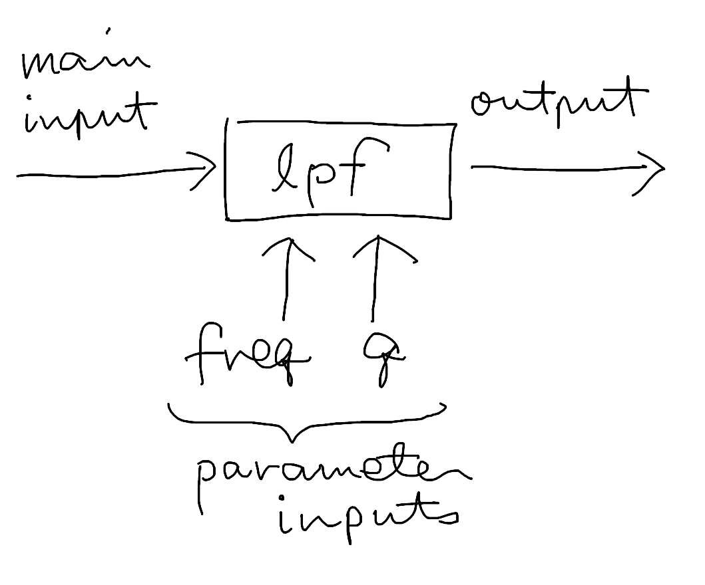
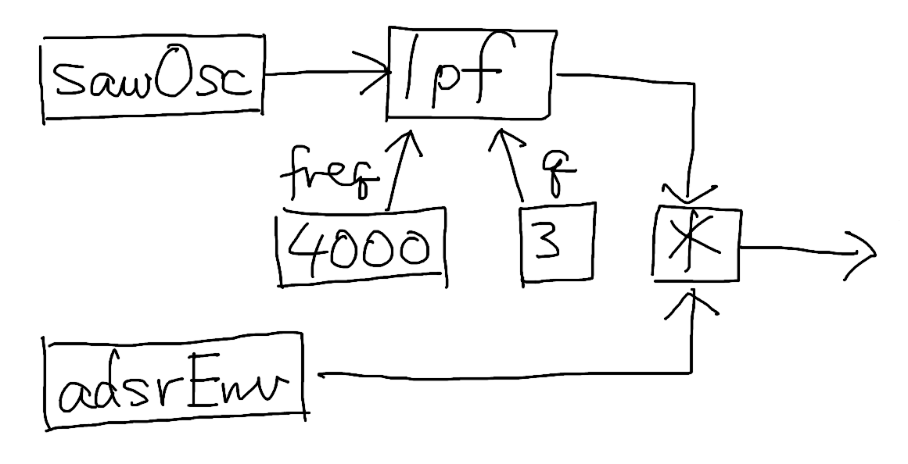

ここでは演奏時の処理の最小単位であるノードと、ノードが作る構造であるモジュールについて解説します。
まずはノードについて解説します。
先に述べたとおり、ノードは演奏時に処理を行う最小単位です。ノードの実例としては以下のようなものがあります：
ノードは他のノードとつながって入出力を行うほか、イベントを受信して内部状態を変化させることができます。
これらについて、以下で詳細に説明します。
ノードは 0 個以上の入力を受け取り、何らかの処理をして、1 個以下の出力を生成します。
全ての入力と出力は数値の時系列データであり、その時間分解能はサンプルです。
入力には 1 個以下の主要な入力（主入力）と、0 個以上の補助的な入力（パラメータ入力）があります。パラメータ入力には各々を識別するための名前がついています。入出力の有無・個数とパラメータ入力の名前は、ノードの種類ごとに決まっています。
主入力がなく、パラメータ入力だけがある場合もあります。
ノードの一種である
lpf（ローパスフィルタ）を例にすると、lpf
は入力として主入力と 2 つのパラメータ入力 freq,
q を取り、出力を生成します。
lpf
は主入力に対してフィルタを適用した結果を出力しますが、このときのフィルタの特性を
freq と q で指定できるようになっています。

これらノードの入出力は、他のノードと接続することができます。すなわち、あるノードの出力が、他のノードの主入力になったり、パラメータ入力になったりします。
先ほどノードの例として、定数と演算、さらにオシレータ、フィルタ、エンベロープを挙げました。これらを組み合わせると、たとえば次のような構造を組み立てることができます。これは原始的な減算合成シンセサイザになっています：

ここで、四角で囲まれているものは全てノードです。sawOsc
はのこぎり波のオシレータであり、adsrEnv
は ADSR で制御されるエンベロープジェネレータです。また 4000
と 3
は定数を提供するノードであり、*
は 2 つの値を乗算するノードです。
このようにノード同士を接続できるのは、ノードの重要な特徴であり、これによって複雑な構造を構築することができます。
上の図では省略されている入力があります：
*
は 2
つの入力を取りますが、これらは名前のないパラメータ入力と考えておけば問題ありません。
演奏中にノードを操作するための機構として、イベントがあります。
イベントはあるノードから別のノードに向けて送信されます。イベントを受け取ったノードは、そのイベントが自らが関知する種類のものであれば、イベントの内容に応じて自らの内部状態を変化させます。
イベントの一例として、Note イベントがあります。Note イベントは note on（発音を開始する）または note off（発音を終了する）のいずれかを表します。
前の節で紹介した
adsrEnv
は、この Note
イベントを処理することができます。adsrEnv
は、受け取った Note イベントが note on
であればアタック処理を開始し、note off
であればリリース処理を開始します。一般に、エンベロープ系のノードは Note
イベントを処理するようになっています。
イベントの送受信の方法は入出力とは異なっています。入出力においては出力から入力に向けて常に値が供給されますが、イベントは何らかの事象が起こったときだけ送受信されます。
adsrEnv
はイベントを受信するノードの例でしたが、逆にイベントを送信するノードの例としてはシーケンサが挙げられます。シーケンサは
MML の内容に沿って、適切なタイミングで Note
その他のイベントを送信することで、楽曲の演奏を実現しています。
シーケンサは ModDL の処理系によって管理されており、ユーザコードからシーケンサを明示的に扱うことはありません。ただし、MML を使ってシーケンサを制御することはできます。
ノードは以下の性質を持っています：
ただし、これらはいずれも一部の種類のノードにおいてのみ成り立つものであり、全てを満たすノードもありえますが、一部しか満たさないノードもあります。
互いに接続された 1 つ以上のノードの塊をモジュールと呼びます。
モジュールは、インストゥルメント、エフェクト、グルーヴの実装として使われる単位です。
モジュールの例としては、先ほどの減算合成シンセサイザを再掲すると：
まず、この構造全体が 1
つのモジュールです。また、その一部である「lpf,
4000, 3
から成る部分」や「adsrEnv,
*
から成る部分」も、「接続された塊」である以上はモジュールと考えることができます。さらには、sawOsc
や 4000 や
*
といった個々のノードもモジュールと見なせます。
このように、モジュールは入れ子を形成します。また、構造上の様々な部分をモジュールと認定することができます。
ただし、「sawOsc,
lpf,
adsrEnv
から成る部分」のようなものは、接続されていない部分があるため、モジュールではありません。
モジュール定義とは、モジュールを構成するノードとその接続関係を ModDL の式として記述したものです。
ModDL 処理系はこのモジュール定義に基づいて、演奏に使うノードの生成・接続を行います。
ModDL の
instrument,
effect,
groove
の各構築文で指定するのは、このモジュール定義です。
たとえば、先ほどの減算合成シンセサイザをモジュール定義として記述し、インストゥルメントトラックとしてトラック a に割り当てるには、次のように記述します：
@instrument ^a, sawOsc | lpf { freq: 4000, q: 3 } * adsrEnvここに記述したものはモジュールそのものではなく、あくまでその定義です（ノードやモジュールそのものを ModDL で記述することはできません）。
このことは、次のようなケースで重要になってきます。
上記のトラック a と同じ音色をトラック b にも割り当てて、和音を演奏したいとします。そのとき次のように 2 回書いてもいいのですが：
@instrument ^a, sawOsc | lpf { freq: 4000, q: 3 } * adsrEnv
@instrument ^b, sawOsc | lpf { freq: 4000, q: 3 } * adsrEnvこの書き方は冗長であり、プログラマの美的感覚に適うものではないはずです。次のように定義を一旦変数に取り、それを 2 つのトラックに割り当てたくなるのではないでしょうか：
@let :instrm, sawOsc | lpf { freq: 4000, q: 3 } * adsrEnv
@instrument ^a, instrm
@instrument ^b, instrm先ほどよりすっきりしました。
しかし、これでいいのでしょうか？ トラック a と b の定義では、変数を通して同一のものを参照しています。これではモジュールがどこかに 1 つだけ作られて、それをトラック a, b の両方から使おうとするような構造になってしまわないでしょうか？ これで和音を演奏できるのでしょうか？
結論からいえば心配は無用です。先ほどから述べているように、トラック a, b で共有しているのはあくまでモジュールの定義であって、モジュールそのものではないからです。
モジュールの実体は個々の
instrument
文ごとに生成されます。定義が共通であったとしても、トラック a と b
に対しては同一内容のモジュールが別個に生成されるので、問題なく和音を演奏できるのです。
クラスベースのオブジェクト指向に慣れた人は、次のような類推で考えるといいかもしれません：
instrument,
effect,
groove
各構築文が暗黙に行う上では説明の都合上変数を導入しましたが、実は次のように書けば、変数を使わずに冗長な記述を回避することは可能です：
@instrument ^ab, sawOsc | lpf { freq: 4000, q: 3 } * adsrEnvですが、この場合もトラック a と b は同じ定義を共有しているため、変数を使った場合と同様の心配は生じるかもしれません（そして、同様に心配は要りません）。